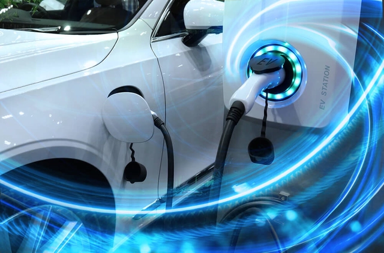

O carro elétrico funciona utilizando a eletricidade como forma de combustível. Isso é viabilizado por meio de uma bateria recarregável, que armazena a energia. Um inversor converte a corrente elétrica contínua em alternada, que é levada ao motor de indução. Dessa forma, a eletricidade aciona o motor elétrico para carros, fazendo com que as rodas girem e o carro elétrico se movimente.

Onde está a matemática nos carros elétricos?
Modelagem de Bateria: Para otimizar o desempenho das baterias, engenheiros usam modelos matemáticos para calcular a capacidade da bateria, a eficiência do carregamento e o tempo de autonomia. Isso inclui a análise de reações químicas, resistência interna e dissipação de calor.
Controle do Motor Elétrico: O controle preciso dos motores elétricos envolve algoritmos matemáticos para regular a velocidade e o torque. O controle de motores pode usar técnicas como controle vetorial ou controle de corrente direta, que se baseiam em equações diferenciais e álgebra linear.
Simulação de Desempenho: Para prever o desempenho dos carros elétricos em diferentes condições, engenheiros usam simulações que requerem matemática avançada, como métodos numéricos e estatística. Isso ajuda a prever como o carro se comportará em várias condições de estrada e clima.
Otimização de Consumo de Energia: A matemática é usada para otimizar o consumo de energia em um carro elétrico, analisando a eficiência do sistema de propulsão, a regeneração de energia e o gerenciamento da bateria. Técnicas como otimização matemática e programação linear são aplicadas para maximizar a autonomia e a eficiência energética.
Desenvolvimento de Algoritmos de Navegação: Sistemas de navegação e assistência ao condutor em carros elétricos utilizam algoritmos matemáticos para processar dados de GPS, sensores e mapas. Isso inclui cálculos de rotas, estimativas de chegada e planejamento de carregamento.